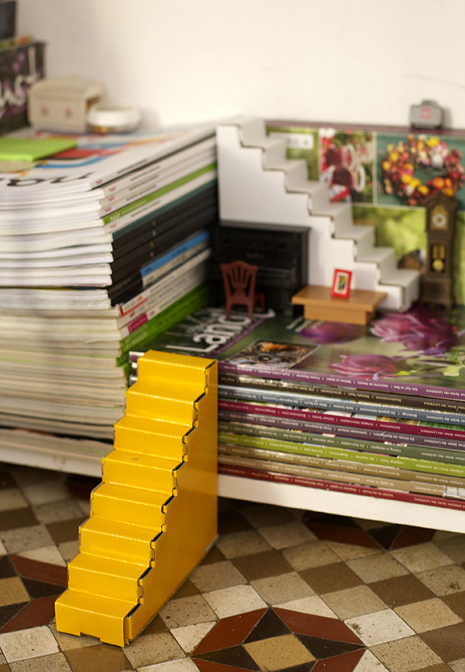

Die Treppen sind nicht nur dazu da, um ins zweite Stockwerk oder überdachten auf Dach des Hauses selbst zu kommen. Die kleinen Figuren benutzten sie auch um auf die Bücher im Regal zu gelangen.



Mit einem zweimal gebogenen Draht haben wir eine sicheres Geländer. Die zwei Enden kann man einfach in die Welle des Karton stecken.
Weiterlesen →

Mit der Erweiterung Marquise haben wir einen kleinen Laden erschaffen.
Weiterlesen →
Erst trägt man eine Schicht Holzleim auf ( wir nehmen dazu ein Stück Karton). Anschließend legt man eine Schicht der Serviette oder das Seidenpapier auf den…
Weiterlesen →
Wir haben mit der Schere in den Rand eines Papptellers geschnitten (in fast gleichem Abstand). Man montiert den Kettenfaden immer über die Mitte gehend. Den Schussfaden…
Weiterlesen →
Mit Spray kannst Du Dein Haus in den Farben anmalen, die Dir am besten gefallen ... Guck Dir vorher an, wie das Modul gefaltet wird,da es…
Weiterlesen →